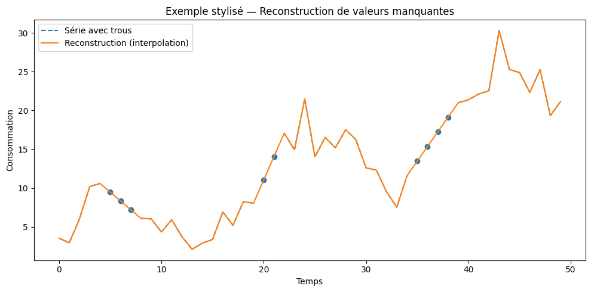
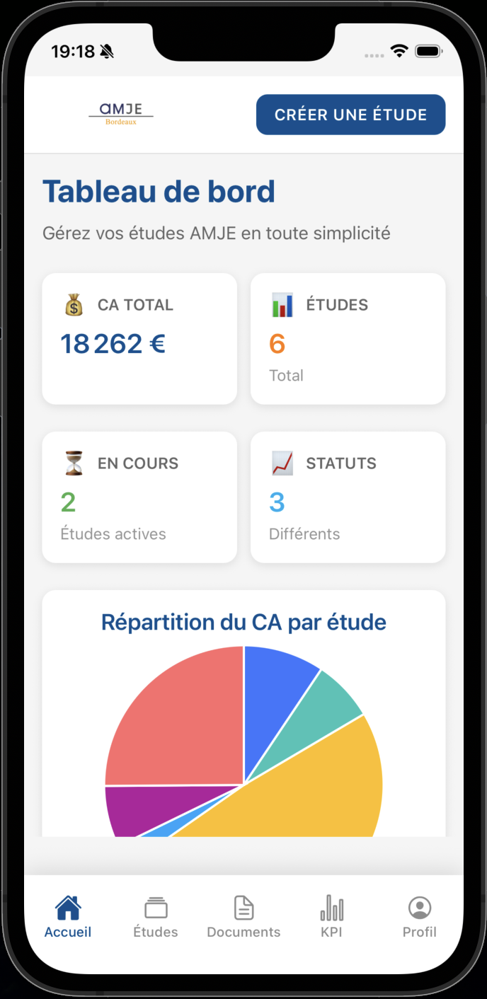
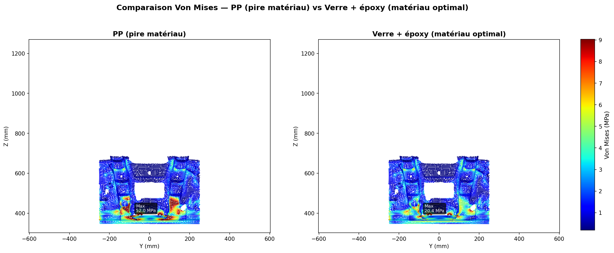
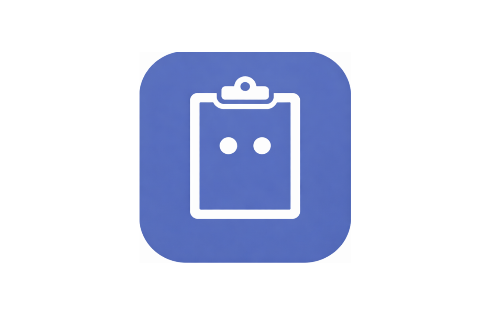

Mechanical Design & Optimization of a Micro-Wind Turbine
Mechanical design of a compact wind turbine for urban environments, focusing on the transmission system (rotor, gearbox, shafts and bearings).

Shoulder Prosthesis – Design Optimization
Academic project focused on the design and finite element modeling of a glenoid component for a shoulder prosthesis, including biomechanical loading and fixation analysis.

Wind Noise Reduction in Ski Helmets
Project focused on reducing wind noise in ski helmets while keeping surrounding sounds audible. The system is based on a Lock-In Amplifier built from basic electronic components.

ENS Data Challenge
Reconstruction of missing values in smart-meter time series using interpolation, filtering and statistical methods.

AMJE Bordeaux – Internal Mobile App
Internal mobile application for the Student Consulting-Club AMJE Bordeaux, built to simplify study management and deliver real-time KPI tracking through a fast and reliable backend.

Composite Tailgate Optimization – ML & FEA
Selection of the optimal composite material and fiber orientation minimizing the Tsai-Wu failure criterion under crash loading, combining Abaqus FEA with a Gaussian Process surrogate model.

AMJE Bordeaux – Slack Automation Bot
Internal Slack automation designed to centralize document tracking for AMJE studies by embedding structured checklists and automated updates directly into Slack workflows.